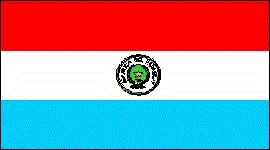
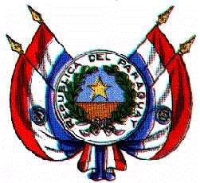

Paraguay
|  |  |
Información general
Nombre oficial: República del Paraguay
Área: 406 752 km²
Costas: No tiene costas
División política:17 Departamentos y el Distrito Capital Asunción
Departamentos Capital
- Concepción Concepción
- San Pedro San Pedro
- La Cordillera Caacupé
- Guairá Villarrica
- Caaguazú Coronel Oviedo
- Caazapá Caazapá
- Itapúa Encarnación
- Misiones San Juan Bautista de las Misiones
- Paraguarí Paraguarí
- Alto Paraná Ciudad del Este
- Central Areguá
- Ñeembucú Pilar
- Amambay Pedro Juan Caballero
- Canendiyú Salto del Guairá
- Presidente Hayes Pozo Colorado
- Alto Paraguay Fuerte Olimpo
- Boquerón Filadelfia
Unidad monetaria: Guaraní
1 Guaraní = 100 céntimos
Idiomas: Español y guaraní (oficiales); se hablan también otras lenguas indígenas; algunas comunidades de origen extranjero hablan alemán, portugués, italiano, ucraniano, etc.
Fiesta nacional: 14 de mayo, Día de la Independencia
Gentilicio: Paraguayo
Hora oficial: GMT -4 horas (normal), -3 (verano)
Miembro de: ONU, OEA, ALADI, MERCOSUR
Curiosidades
Paraguay en lengua guaraní significa "aguas adornadas", haciendo una metáfora con el paisaje del país formado por un conjunto de islotes florecidos.
En el siglo XVI la ciudad de Asunción se convirtió en el mayor centro de la colonización española en el sudeste de América.
Paraguay no tiene costas marítimas pero sus dos principales ríos, el Paraguay y el Paraná, le comunican con el Atlántico.
Información adicional en Internet.
Perfil Ecónomico
Perfil Demográfico
Población: 6.158.000 hab.
Densidad de población: 13,5 hab/km²
Fuente
http://internacional.universia.net/iberoamerica/datos-paises/paraguay/poblacion.htm
Perfil Cultural
Alfabetismo: 93 %
Religión:
- Católicos: 96,4%
- Protestantes: 1,9%
- No religiosos: 0,4%
- Otros: 1,3%
Algunas figuras notables:
- Agustín Pío Barrios (1885-1944). Músico y compositor
- Gabriel Casaccia (1908-1980). Escritor
- Ruy Díaz de Guzmán (1560-1629). Escritor y militar
- José Asunción Flores (1904). Compositor y violinista
- Juan Carlos Moreno (1912). Compositor
- Josefina Plá (1909). Escritora, periodista, crítica literaria y dramaturga
- Augusto Roa Bastos (1917). Poeta y novelista
- Hugo Rodríguez Alcalá (1918). Poeta y novelista
- Elvio Romero (1927). Poeta
Lugares declarados patrimonio mundial por la UNESCO
- Ruinas de las misiones jesuíticas de La Santísima Trinidad de Paraná y Jesús de Tavarangue.
Sistema de Gobierno
Constitución vigente: 22 de junio de 1992
Sistema ejecutivo: Presidente de la República (Jefe de Estado y de Gobierno, Comandante en Jefe de las Fuerzas Armadas), Vicepresidente y Consejo de Ministros. Tanto el presidente como el vicepresidente son elegidos por sufragio universal directo para un término de cinco años, pero sin derecho a reelección.
Sistema legislativo: Senado (cuarenta y cinco miembros), Cámara de Diputados (ochenta miembros). Ambas Cámaras son elegidas directamente por voto popular para un período de cinco años y están sujetas a disolución.
Sistema judicial: Corte Suprema de Justicia (nueve magistrados designados por el Senado para un término de cinco años), un Tribunal de Cuentas y otros tribunales menores.
Aproximación histórica
En la región del Río de la Plata y enclavado entre Bolivia, Brasil y la Argentina se encuentra Paraguay.
La etnia indígena característica del Paraguay es la de los guaraníes que vivían de la agricultura y ocupaban la región al comenzar la colonización española en 1535.
En el siglo XVI, la ciudad de Asunción se convierte en el centro más importante de la colonización española del Río de la Plata.
En 1811 se independiza de España y en 1814, el dictador Gaspar de Francia, aísla al país del continente hasta su muerte en 1840. En 1865 entra en guerra con Brasil, Argentina y Uruguay, las fuerzas paraguayas son derrotadas en 1870 y el país ocupado por Brasil hasta 1876. El desastre de la denominada Guerra de la Triple Alianza, diezma la población, el país pierde territorios y se instaura un sistema oligárquico que convierte a Paraguay en uno de los países más atrasados de América del Sur. Diferentes golpes militares se suceden en el país y en 1954, el general Alfredo Stroessner inicia un régimen dictatorial que se extiende hasta 1989 y que se caracterizó por la corrupción y la represión.
En el relieve de Paraguay se distinguen tres regiones: la selva, o región oriental, la región central, con planicies y el Chaco, o región occidental cuya aridez aumenta hacia el oeste.
Entre los principales productos agrícolas de Paraguay se encuentran el algodón, la caña de azúcar y madera, con una industria de bienes de consumo y derivados del petróleo.
«-- ir al comienzo
«-- regresar